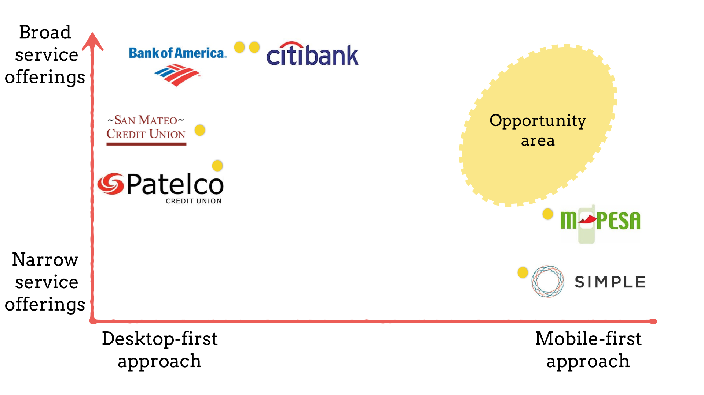
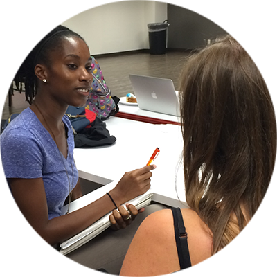
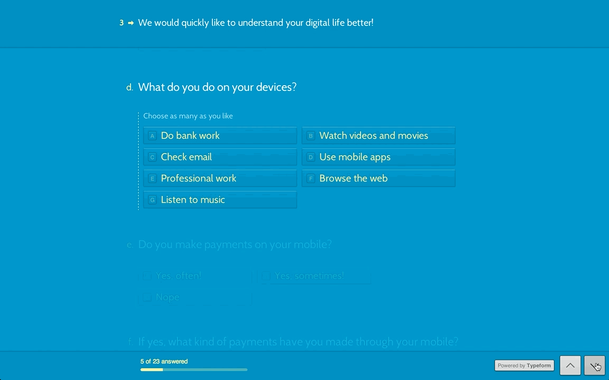
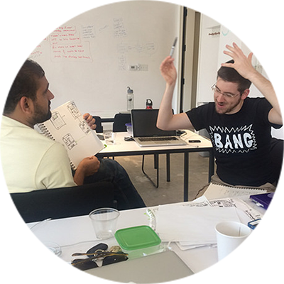
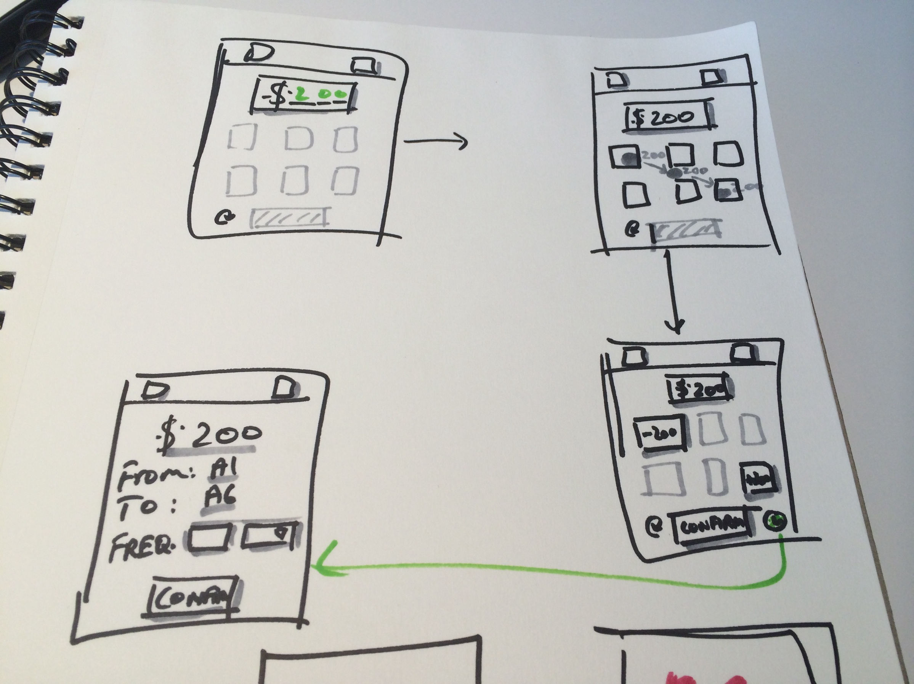
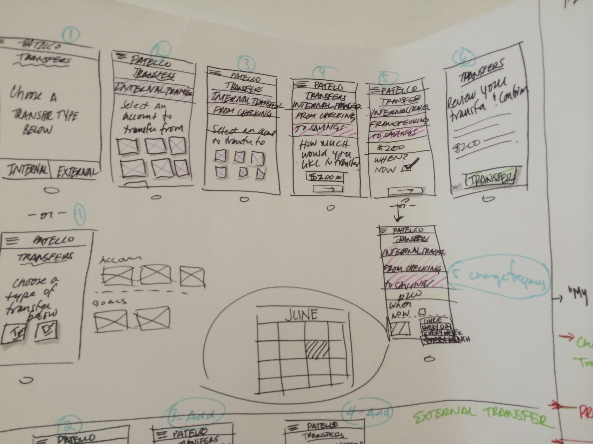
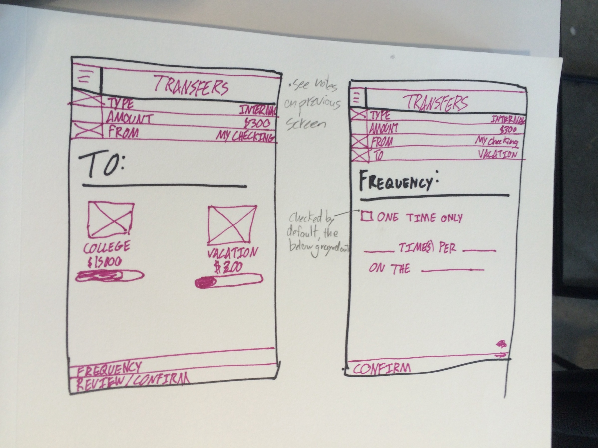

The Challenge
Design brief
Design a mobile-first banking experience centered around working-class families
Context
- Hypothetical project at General Assembly for a real Credit Union named Patelco
- Duration of 2 weeks
- Goal was to create a checking account experience for the unique case of credit union customers
Team
I worked with William and Joaille, my classmates at General Assembly. My key contributions were in Research, Ideation, Prototyping and Delivery
Outcomes
- Interactive prototype for Mobile banking app
- New innovative ideas on Money transfer through Mobile apps and Cash transfers
- Specifications document for Mobile app
- Immersed myself in the following tools:
- Omnigraffle
- POP
- Flinto
 Illustrator
Illustrator
Discovery
What other solutions are out there?
Our competitive analysis compared different banking solutions out there in terms of breadth of banking services and approach to Mobile-First design.
From "I only use the ATM" to "I just use my phone"
Our three main categories of questions were:
1. Current banking preferences
2. Current mobile banking behaviors
3. General digital engagement
{kind=link}
Our team conducted multiple qualitative interviews to understand the responses of the user in-depth. We got varied responses from "I just do my banking using my ATM card" to "I only use my bank app! I have never gone to the bank since I opened my account."
{kind=link}
We put out a survey through Typeform to collect more information about users. Although we got some sense of different types of banking engagement, our data wasn't as useful due the small sample size and low variation in user types (most respondents were tech-savy youth).
What are the steps in transferring money?
Our team analyzed the task flow for Money Transfer from the point where the user decides to transfer the money to the acknowledgement of the transfer completion.
{kind=link}
We also went through some banking sites and apps to understand the existing flow that people are used to.
Ideation
We need some personas!
Based on what we learnt from the user interviews and research on credit unions, we created personas that would give us a decision framework for designing our app.


Not 'You Vs Me', only 'Us vs The problem'
To increase our productivity as a team, we used the Design Studio method to sketch out our ideas around the task of transferring money. Over many iterations, each one of us sketched our ideas out and critiqued each others sketches.
In a short period of time, we were able to create multiple app wireframes of the internal wire transfer task. This method also gave us insight into the duplication of user decisions when you look at internal transfers as a separate flow external transfers.
  Delivery
The final mockups were created keeping in mind the different inputs and feedback we got from testing our wireframes and prototypes. The visual language was inspired by the Patelco brand colors and the typefaces used in Simple